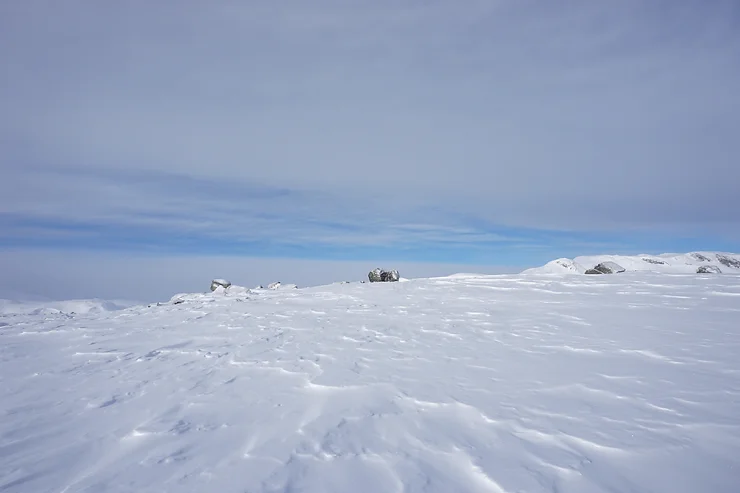
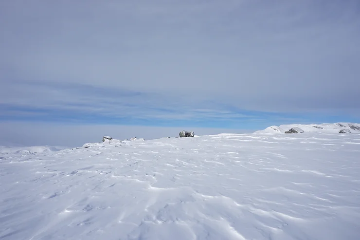
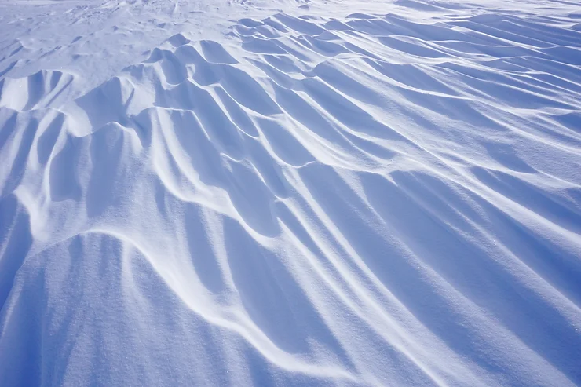
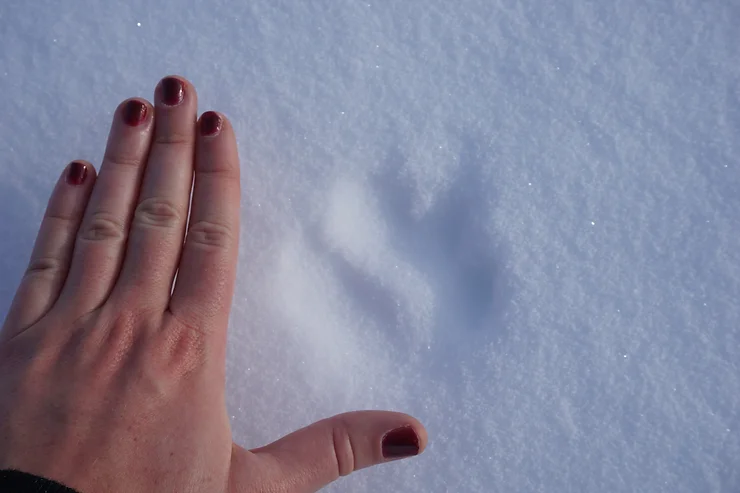
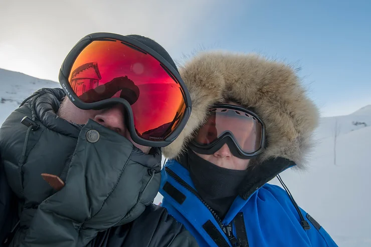
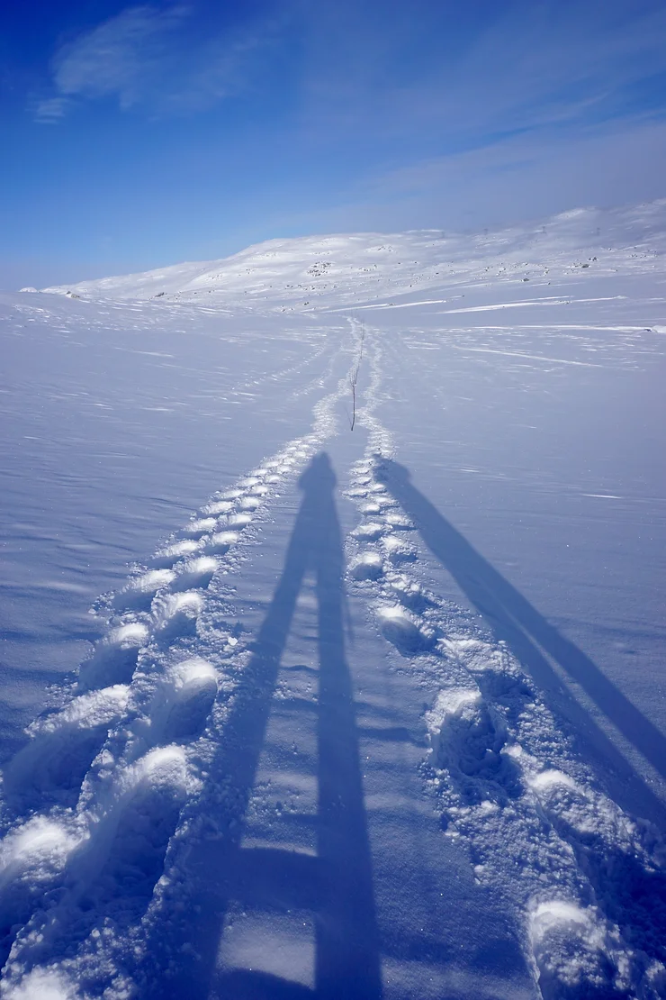

Snow Shoe Hiking in Norway
During the first few days in Finse Norway, visibility was limited, as a layer of snow blanketed all, leaving anything more than 10 feet in front of you a complete white-out.

Yet on my final day in small mountainous snowcapped village the clouds dissipated, revealing a mountainous landscape I was unaware was literally in the backyard. With a full day until my flight out of Oslo, I decided to snowshoe hike up the newly appeared mountains. My micro-adventure amigo and I, had been told conflicting reports of the distance of a hut somewhere off in the hills. Everyone said it would be fastest to cross-country ski, yet given my first attempts at skiing were akin to a baby giraffe trying to walk... I opted for the more graceful alternative - snow shoes - and set off, unsure of how much time we would spend exposed to the elements. My guess was anywhere between two to six hours. Sofia attempting to ski...
 

After days with sustained wind at 33 knots, the snow had developed a texture that resembled wind-swept desert sand for as far as the eye could see. Having never experienced an environment remotely close to this, I was in a child-like stupor, spellbound and full of questions. "How solid is the frozen lake we are standing on?", I wondered. "Tell me about avalanches... When does all this snow melt? What do the lemmings and arctic foxes eat up here?"
On the ascent we did not come across a single soul, and when we paused to catch our breath, and the snow ceased to squeak beneath our toes, there was an utter silence. Find yourself in the middle of the ocean, and there's no escape from the sound of the waves lapping against the vessel's hull. If you wander through the jungle, there is a constant symphony of wildfire and insects. Even the desert has a dizzying array of sounds. This is not the case, however, in the Norwegian snow capped mountains, where an utter silence permeates the air. Looking out into the bright white, the land seemed nearly devoid of life. But I couldn't have been more wrong. As we craned our eyes into the distance, we began to notice lemming and arctic fox tracks dotting the landscape.
As the hike progressed, we grew determined to find the mysterious hut. For two people with nearsighted vision, every distant rock in the snow seemed to resemble a roof line, which developed into a point of excitement that drew us deeper in the mountains and spurred on the "rock or hut" game... When we finally found the hut I was ecstatic for a lunch break!
We entered to find a simple room with benches, and as we sat, my body cooled down, and steam permeated from within my wool layers. Unbeknownst to the Floridian, I took a bite of my sandwich only to find that given the exposure to the cold, my salami and lettuce sandwich had frozen on our ascent, I like to think of it as a panini antithesis. The hut had a guest book in which we took turns writing a hysterical short story, for as long as our fingers could stand to be out of gloves and exposed to the elements - Hopefully, the next hikers get a chuckle. Conscious of losing body heat and sun fall we began the descent back down the mountain.
 